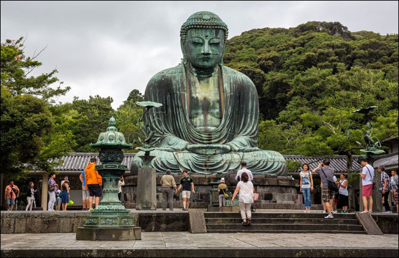
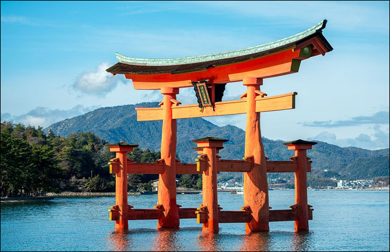
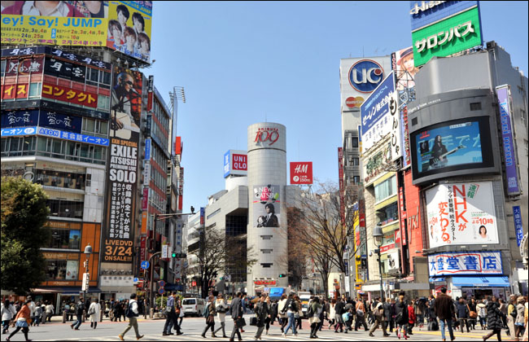
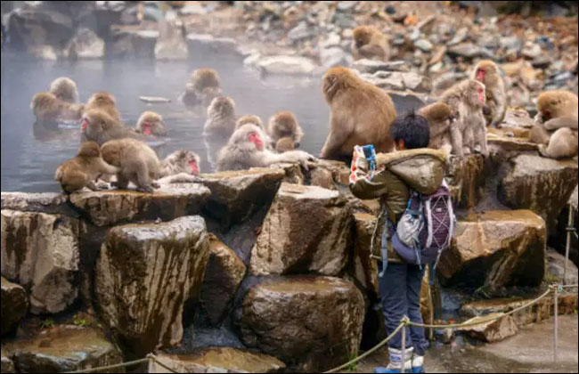

JAPAN
-

Himeji Castle - Hyogo Prefecture
The Hyogo Prefecture of Japan holds what is regarded as one of the top examples of historically stable Japanese castle architecture, encompassing 83 rooms and a built in system with defensive mechanisms. This historic architectural marvel dates back to 1333 and was remodeled heavily in 1581 (by Toyotomi Hideyoshi, a prominent samurai and politician from the Sengoku period).
-

Great Buddha - Kamakura (Kanagawa Prefecture)
The great buddha statue is located within the city of Kamakura, which belongs to the Kanagawa Prefecture. This statue is one of Japan's most famed icons and was said to be created around 1252. The great buddha statue is estimated to be 43.8 feet tall and 103 tons, it is hollow and the interior can be viewed from the outside.
-

Red Torii Gate - Fushimi Ward (Kyoto Prefecture)
Located in the Fushimi Ward in the Kyoto Prefecture is the head shrine (symbolic of the god Inari) Fushimi Inari Taisha. This great attraction continues for 2.5 miles (about a two hour walk).
-

Miyajima - Itsukushima (Hiroshima Bay)
This torii (Shinto shrine) is designed to welcome newcomers to the island of Itsukushima, estimated to be built around the mid-16th century (it is noted that the shrine was destroyed several times.)
-

Shibuya Crosswalk - Tokyo Prefecture
Also known as a scramble crossing (popularized by the traffic engineer Henry Barnes), Shibuya Crosswalk is Japan's largest and most famous diagonal crosswalk. Three thousand people can cross in one instance.
-

Jigokudani Monkey Park - Yamanouchi (Nagano Prefecture)
This famous park resides in the valley of the Yokoyu river and is apart of the Joshinetsu Kogen National Park. The biggest attraction here are the Japanese macaques (also known as snow monkeys), the only monkeys in the world to bathe in hotsprings.